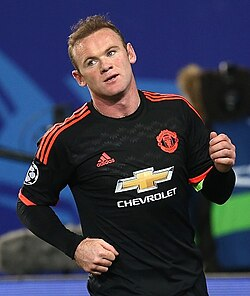

Wayne Rooney
Full Name: Wayne Mark Rooney
Date of Birth: October 24, 1985
Place of Birth: Liverpool, England
Position: Forward / Midfielder
Clubs: Everton, Manchester United, D.C. United, Derby County
National Team: England
Career Highlights
- Manchester United’s all-time leading goal scorer
- Scored 253 goals for Manchester United
- Won 5 Premier League titles and 1 Champions League
- England’s all-time top goal scorer (53 goals)
- Over 700 career appearances and 300+ goals
Legacy
- Known for power, versatility, and vision
- Captained both Manchester United and England
- Transitioned into management after retirement
- Highly regarded as one of England’s best players

Created by
VEDANT
←Back to Football Index